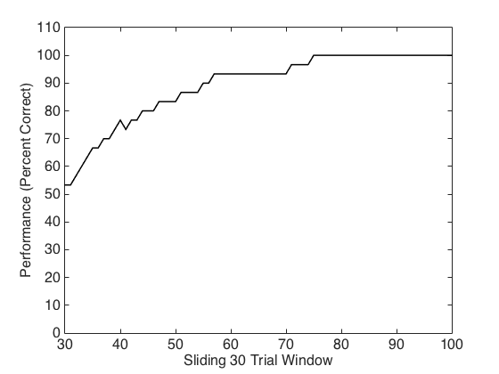
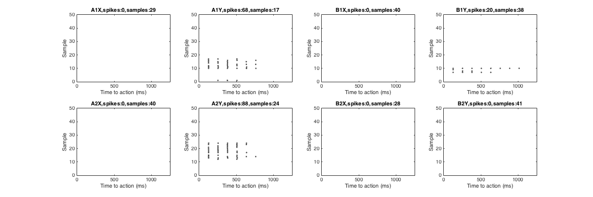
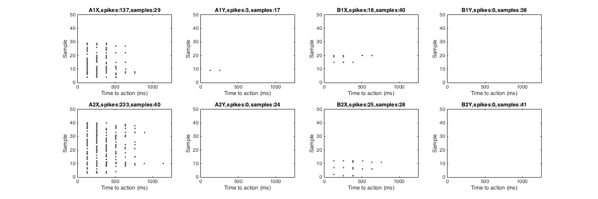
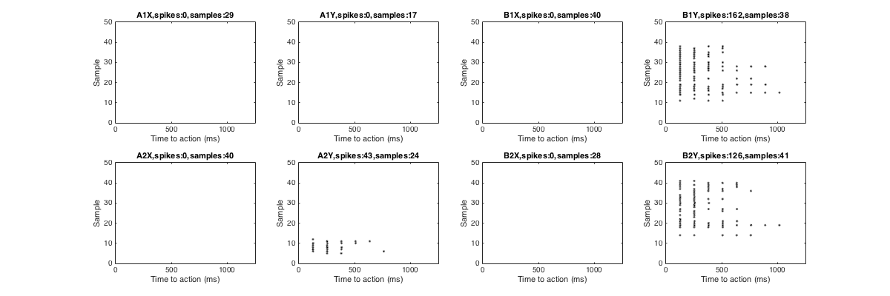
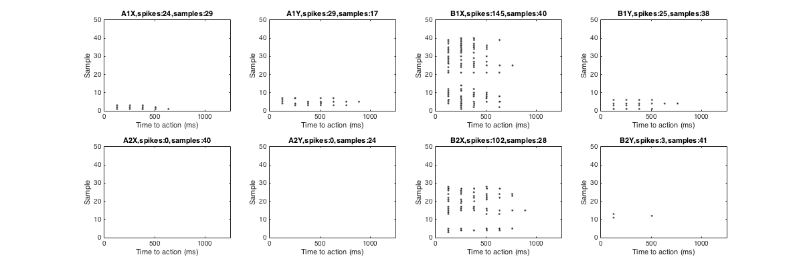

This is the readme for the models associated with the paper: Raudies F, Hasselmo ME (2014) A model of hippocampal spiking responses to items during learning of a context-dependent task. Front Syst Neurosci 8:178 This code was contributed by Florian Raudies. Note that the code is also available at the journal web site http://journal.frontiersin.org/file/downloadfile/150379/octet-stream/Data%20Sheet%201.ZIP/5/1/108378 This directory contains Matlab (R) code to simulate a small hippocampal network that learns a context-dependent task. To reproduce the panels of the figures in the article use the scripts 'Figure3AAndFigure4.m' and 'Figure3BAndFigure5.m'. For example running Figure3AAndFigure4 by entering that name on the matlab command prompt, after a few minutes yields:  Fig 3A  Fig 4A  Fig 4B  Fig 4C  Fig 4D Please report problems, bugs, or suggestions to fraudies__at__bu__dot__edu (Replace __at__ by @ and __dot__ by .). If you use any of the methods or code, please cite our article: Raudies, F. and Michael E. Hasselmo (2014). A model of hippocampal spiking responses to items during learning of a context-dependent task. Frontiers in Systems Neuroscience. Copyright (C) 2014 Florian Raudies, 09/07/2014, Boston University. This program is free software: you can redistribute it and/or modify it under the terms of the GNU General Public License as published by the Free Software Foundation, either version 3 of the License. This program is distributed in the hope that it will be useful, but WITHOUT ANY WARRANTY; without even the implied warranty of MERCHANTABILITY or FITNESS FOR A PARTICULAR PURPOSE. See the GNU General Public License for more details. You should have received a copy of the GNU General Public License along with this program. If not, see http://www.gnu.org/licenses/.